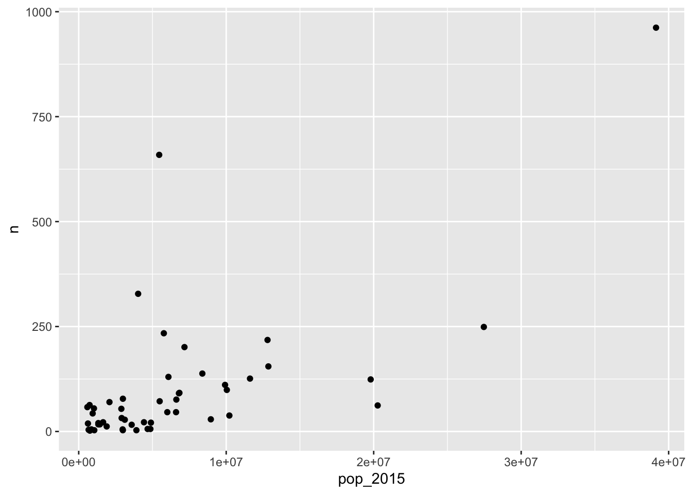
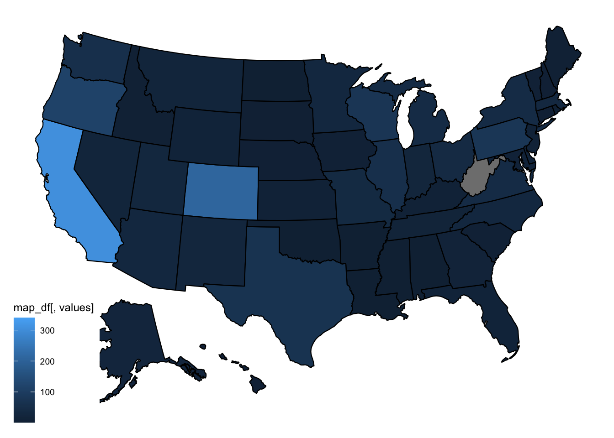
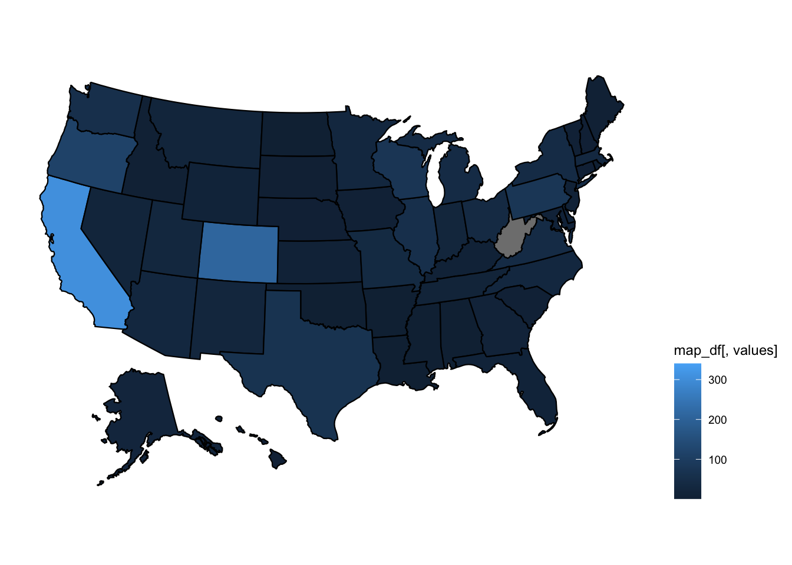
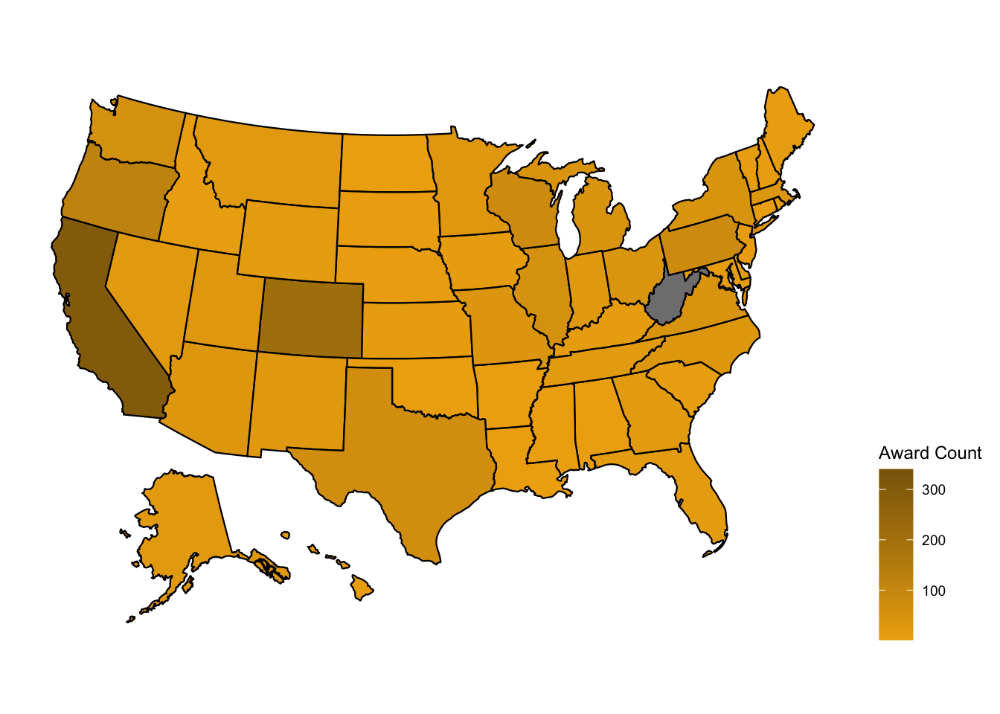

Module 13 Data Case Study 3
For this case study, we will work with the Great American Beer Festival data set, provided as a tidy tuesday data set.
As usual, we first load the libraries we are going to use.
Then we load the data.
beer_awards <- readr::read_csv('https://raw.githubusercontent.com/rfordatascience/tidytuesday/master/data/2020/2020-10-20/beer_awards.csv')## Parsed with column specification:
## cols(
## medal = col_character(),
## beer_name = col_character(),
## brewery = col_character(),
## city = col_character(),
## state = col_character(),
## category = col_character(),
## year = col_double()
## )Take some time to explore this data set. What questions can you ask? What plots can you draw?
13.1 Adding population info to data frame
Whenever you’re dealing with states or countries, it’s usually relevant to know the population of the different states/countries. For beer awards, we can assume that the higher the population of a state, the higher the number of breweries, thus the higher the number of awards. Let’s check if this assumption is correct. First, we need to retrieve information about US states’ population numbers. The usmap package has a statepop data set with that info.
First, we need to install usmap and called it with library().
We can now inspect the statepop data frame.
## Rows: 51
## Columns: 4
## $ fips <chr> "01", "02", "04", "05", "06", "08", "09", "10", "11", "12", …
## $ abbr <chr> "AL", "AK", "AZ", "AR", "CA", "CO", "CT", "DE", "DC", "FL", …
## $ full <chr> "Alabama", "Alaska", "Arizona", "Arkansas", "California", "C…
## $ pop_2015 <dbl> 4858979, 738432, 6828065, 2978204, 39144818, 5456574, 359088…We just need the abbr and pop_2015 columns, but we have to make sure that the state abbreviation column name matches what we have for our beer_awards data.
We are interested in number of beer awards per state, to check whether it correlates with the population size. We need to summarise our beer_awards data to get number of awards per state.
## # A tibble: 52 x 2
## state n
## <chr> <int>
## 1 Ak 1
## 2 AK 62
## 3 AL 6
## 4 AR 5
## 5 AZ 92
## 6 CA 962
## 7 CO 659
## 8 CT 16
## 9 DC 4
## 10 DE 43
## # … with 42 more rowsThere are at least two Alaska state codes (Ak and AK). We need to standardize the codes, to upper case, for this count to work correctly. Let’s fix that in our original data, so we don’t run into this problem again.
Now we can count number of awards per state.
## Rows: 50
## Columns: 2
## $ state <chr> "AK", "AL", "AR", "AZ", "CA", "CO", "CT", "DC", "DE", "FL", "GA…
## $ n <int> 63, 6, 5, 92, 962, 659, 16, 4, 43, 62, 38, 17, 28, 22, 155, 76,…We now can add population info from our us_pop data frame to our award_count_per_state data.
## Joining, by = "state"## Rows: 50
## Columns: 3
## $ state <chr> "AK", "AL", "AR", "AZ", "CA", "CO", "CT", "DC", "DE", "FL", …
## $ n <int> 63, 6, 5, 92, 962, 659, 16, 4, 43, 62, 38, 17, 28, 22, 155, …
## $ pop_2015 <dbl> 738432, 4858979, 2978204, 6828065, 39144818, 5456574, 359088…Finally, we draw a scatter plot of award count (n) by population size (pop_2015).

13.2 Plotting a map
Whenever you have data with locations, like US states, you can think about plotting data to a geographical map. For the US, that’s made extra easy with the usmap package.
We can now plot a map, using the plot_usmpa function.

Let’s make it look nicer by moving the legend right.
beer_awards %>%
count(state, medal) %>%
plot_usmap(data = ., values = "n") +
theme(legend.position = "right")
We can also change the title of the legend.
beer_awards %>%
count(state, medal) %>%
plot_usmap(data = ., values = "n") +
theme(legend.position = "right") +
scale_fill_continuous(name = "Award Count")
People usually associate darker colors with higher density or higher values. Let’s change the colors to define a light color for our low values and a dark color for our high values. Check this documentation for color names in R.
beer_awards %>%
count(state, medal) %>%
plot_usmap(data = ., values = "n") +
theme(legend.position = "right") +
scale_fill_continuous(name = "Award Count",
low = "darkgoldenrod2",
high = "darkgoldenrod4")
13.3 DATA CHALLENGE 07
Accept data challenge 07 assignment